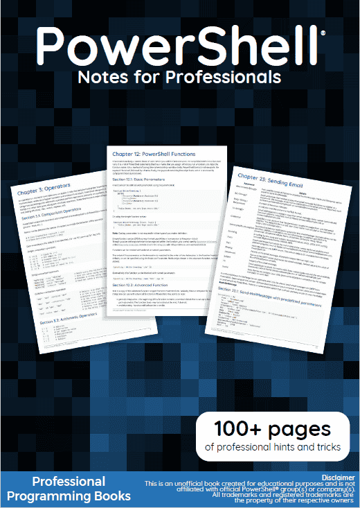

☰

PowerShell Notes
Chapters
- Getting started with PowerShell
- Variables in PowerShell
- Operators
- Special Operators
- Basic Set Operations
- Conditional logic
- Loops
- Switch statement
- Strings
- HashTables
- Working with Objects
- PowerShell Functions
- PowerShell Classes
- PowerShell Modules
- PowerShell profiles
- Calculated Properties
- Using existing static classes
- Built-in variables
- Automatic Variables
- Environment Variables
- Splatting
- PowerShell "Streams"; Debug, Verbose, Warning, Error, Output and Information
- Sending Email
- PowerShell Remoting
- Working with the PowerShell pipeline
- PowerShell Background Jobs
- Return behavior in PowerShell
- CSV parsing
- Working with XML Files
- Communicating with RESTful APIs
- PowerShell SQL queries
- Regular Expressions
- Aliases
- Using the progress bar
- PowerShell.exe Command-Line
- Cmdlet Naming
- Running Executables
- Enforcing script prerequisites
- Using the Help System
- Modules, Scripts and Functions
- Naming Conventions
- Common parameters
- Parameter sets
- PowerShell Dynamic Parameters
- GUI in PowerShell
- URL Encode/Decode
- Error handling
- Package management
- TCP Communication with PowerShell
- PowerShell Workflows
- Embedding Managed Code (C# | VB)
- How to download latest artifact from Artifactory using PowerShell script (v2.0 or below)?
- Comment-based help
- Archive Module
- Infrastructure Automation
- PSScriptAnalyzer - PowerShell Script Analyzer
- Desired State Configuration
- Using ShouldProcess
- Scheduled tasks module
- ISE module
- Creating DSC Class-Based Resources
- WMI and CIM
- ActiveDirectory module
- SharePoint Module
- Introduction to Psake
- Introduction to Pester
- Handling Secrets and Credentials
- Security and Cryptography
- Signing Scripts
- Anonymize IP (v4 and v6) in text file with PowerShell
- Amazon Web Services (AWS) Rekognition
- Amazon Web Services (AWS) Simple Storage Service (S3)